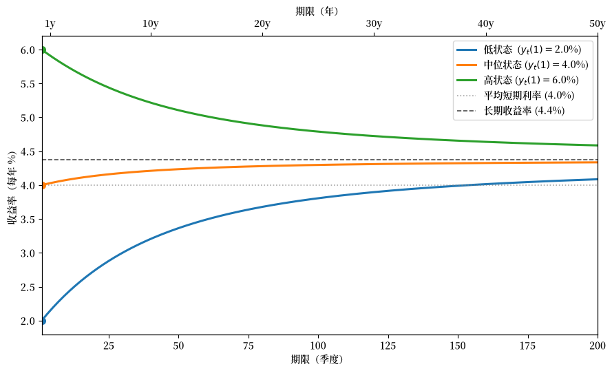
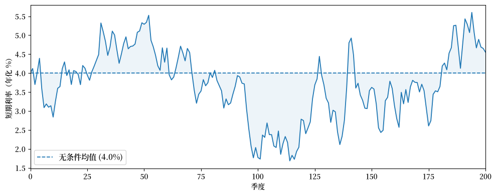
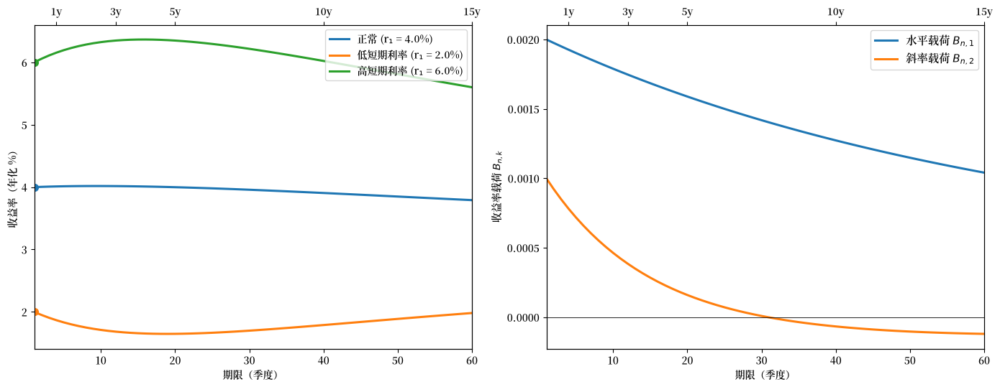
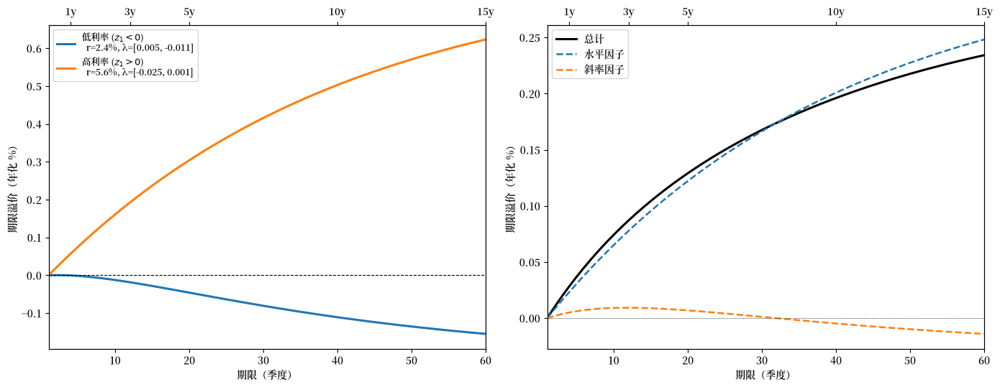
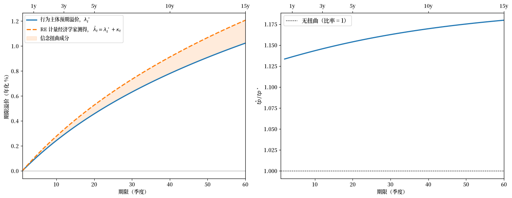

135. 资产价格的仿射模型#
135.1. 概述#
本讲座描述了一类随机贴现因子的仿射或指数二次型模型，这类模型在实证金融中已被广泛使用。
这些模型在 Ljungqvist and Sargent [2018] 的第 15 章中有所介绍。
这里讨论的模型采用了与 Hansen and Singleton [1983] 中时间可分的 CRRA 随机贴现因子不同的方法，后者在我们的 配套讲座 中进行了研究。
CRRA 随机贴现因子为
其中 \(\rho\) 为时间偏好率，\(\gamma\) 为相对风险厌恶系数，对数消费增长为 \(g + \sigma_c \varepsilon_{t+1}\)，且 \(r_t = \rho + \gamma g - \frac{1}{2}\sigma_c^2\gamma^2\)。
该模型断言，对总消费增长的随机部分 \(\sigma_c\varepsilon_{t+1}\) 的暴露是唯一被定价的风险，是各资产预期回报之间差异的唯一来源。
这一设定的实证困难（股权溢价之谜、无风险利率之谜，以及 Doubts or Variability? 中讨论的 Hansen-Jagannathan 边界）促使人们采用本讲座所描述的替代方法。
直白地说，本讲座将研究的模型宣告了卢卡斯资产定价模型的随机贴现因子的失败。
仿射模型保持 \(\mathbb{E}(m_{t+1}R_{j,t+1}) = 1\)，但将随机贴现因子与消费风险分离，从而也在很大程度上与宏观经济学分离。
相反，它
为 \(m_{t+1}\) 指定了一个解析上易于处理的随机过程，并
利用应用于 \(N\) 种资产的 \(\mathbb{E}(m_{t+1}R_{j,t+1}) = 1\) 的过度识别约束，让数据揭示风险及其价格。
备注
包括 [Bansal and Yaron, 2004] 和 [Hansen et al., 2008] 在内的研究者一直不太愿意放弃基于消费的随机贴现因子模型。
我们研究的关键应用包括：
对风险资产定价：风险价格和暴露如何决定超额回报。
仿射期限结构模型：债券收益率作为状态向量的仿射函数（Ang and Piazzesi [2003]）。
风险中性概率：定价方程的一种测度变换表示。
扭曲信念：当行为主体持有系统性偏差的预测时，重新解释风险价格估计（Piazzesi et al. [2015]）；另见 Risk Aversion or Mistaken Beliefs?。
本讲座使用的对数正态定价工具也出现在 资产定价：有限状态模型 和 随机消费、风险规避与资产回报的时间行为 中。
测度变换的论证依赖于 似然比过程 和 统计散度度量 中研究的那类似然比。
我们从以下导入开始：
import numpy as np
import matplotlib.pyplot as plt
from collections import namedtuple
from numpy.linalg import eigvals
from scipy.linalg import solve_discrete_lyapunov
from scipy.stats import norm
135.2. 模型#
135.2.1. 状态动态与短期利率#
该模型有两个部分。
第一部分是一个向量自回归，描述了经济状态和短期利率的演变：
这里
\(\phi\) 是一个稳定的 \(m \times m\) 矩阵，
\(C\) 是一个 \(m \times m\) 矩阵，
\(\varepsilon_{t+1} \sim \mathcal{N}(0, I)\) 是一个独立同分布的 \(m \times 1\) 随机向量，
\(z_t\) 是一个 \(m \times 1\) 状态向量。
方程 (135.2) 表明，短期利率 \(r_t\)，即单期无风险债权的净收益率，是状态 \(z_t\) 的仿射函数。
第二部分是一个风险价格向量 \(\lambda_t\) 及其相关的随机贴现因子 \(m_{t+1}\)：
这里 \(\lambda_0\) 是 \(m \times 1\)，\(\lambda_z\) 是 \(m \times m\)。
\(\lambda_t\) 中乘以风险 \(\varepsilon_{t+1}\) 相应分量的各项被称为风险价格，因为它们决定了对每个风险分量的暴露如何影响预期回报（如我们下面所示）。
由于 \(\lambda_t\) 是 \(z_t\) 的仿射函数，随机贴现因子 \(m_{t+1}\) 是状态 \(z_t\) 的指数二次型。
我们按如下方式实现模型的各部分。
AffineModel = namedtuple('AffineModel',
('μ', 'φ', 'C', 'δ_0', 'δ_1', 'λ_0', 'λ_z', 'm', 'φ_rn', 'μ_rn'))
def create_affine_model(μ, φ, C, δ_0, δ_1, λ_0, λ_z):
"""创建一个仿射期限结构模型。"""
μ = np.asarray(μ, float)
φ = np.asarray(φ, float)
C = np.asarray(C, float)
δ_1 = np.asarray(δ_1, float)
λ_0, λ_z = np.asarray(λ_0, float), np.asarray(λ_z, float)
return AffineModel(μ=μ, φ=φ, C=C, δ_0=float(δ_0), δ_1=δ_1,
λ_0=λ_0, λ_z=λ_z, m=len(μ),
φ_rn=φ - C @ λ_z, μ_rn=μ - C @ λ_0)
def simulate(model, z0, T, rng=None):
"""在 T 期内模拟 z_{t+1} = μ + φ z_t + C ε_{t+1}。"""
if rng is None:
rng = np.random.default_rng(42)
Z = np.zeros((T + 1, model.m))
Z[0] = z0
for t in range(T):
ε = rng.standard_normal(model.m)
Z[t + 1] = model.μ + model.φ @ Z[t] + model.C @ ε
return Z
def short_rate(model, z):
"""计算 r_t = δ_0 + δ_1^⊤ z_t。"""
return model.δ_0 + model.δ_1 @ z
def risk_prices(model, z):
"""计算 λ_t = λ_0 + λ_z z_t。"""
return model.λ_0 + model.λ_z @ z
135.2.2. SDF 的性质#
由于 \(\lambda_t^\top\varepsilon_{t+1}\) 是条件正态的，因此有
以及
练习 135.1
证明 (135.4) 中定义的 SDF 满足
以及
其中 \(\| \lambda_t \| = \sqrt{\lambda_t^\top\lambda_t}\) 表示风险价格向量的欧几里得范数。
对于第二个结果，使用对数正态方差公式以及对小的 \(x\) 和 \(r_t\) 的近似 \(\exp(x) \approx 1 + x\) 和 \(\exp(-r_t) \approx 1\)。
解答 练习 135.1
由 (135.4)，我们有
由于 \(-\lambda_t^\top \varepsilon_{t+1} \sim \mathcal{N}(0, \lambda_t^\top \lambda_t)\)，我们有 \(\mathbb{E}_t[\exp(-\lambda_t^\top \varepsilon_{t+1})] = \exp\left(\frac{1}{2}\lambda_t^\top \lambda_t\right)\)。
因此，
\(m_{t+1}\) 是条件对数正态的，其中 \(\log m_{t+1} \sim \mathcal{N}(-r_t-\frac{1}{2}\lambda_t^\top\lambda_t, \lambda_t^\top \lambda_t)\)。
由对数正态方差公式 \(\text{Var}(\exp(X)) = (\exp(\sigma^2) - 1) \exp(2\mu + \sigma^2)\)（对于 \(X \sim \mathcal{N}(\mu, \sigma^2)\)），我们有
这是根据对小的 \(x\) 的近似 \(\exp(x) \approx 1 + x\) 得到的。
因此，
对于小的 \(r_t\)，有 \(\exp(-r_t) \approx 1\)，我们得到
第一个方程确认 \(r_t\) 是无风险单期债券的净收益率。
这就是为什么在指数二次型文献中 \(r_t\) 被称为短期利率。
第二个方程表明，SDF 的条件标准差近似等于风险价格向量的大小，这是对整体市场风险价格的一种度量。
这个近似来自一个精确公式：由于 \(m_{t+1}\) 是条件对数正态的，
根据汉森-贾根纳森界 [Hansen and Jagannathan, 1991]，该比率约束了每一种超额收益的条件夏普比率，因此 \(\|\lambda_t\|\) 告诉我们夏普比率可以有多大。
135.3. 对风险资产定价#
135.3.1. 对数正态回报#
考虑一种风险资产 \(j\)，其总回报具有对数正态的条件分布：
其中暴露向量
这里 \(\alpha_0(j)\) 是 \(m \times 1\)，\(\alpha_z(j)\) 是 \(m \times m\)。
\(\alpha_t(j)\) 的各分量表示 \(\log R_{j,t+1}\) 对风险向量 \(\varepsilon_{t+1}\) 相应分量的暴露。
设定 (135.5) 蕴含 \(\mathbb{E}_t R_{j,t+1} = \exp(\nu_t(j))\)， 因此 \(\nu_t(j)\) 是预期总回报的对数。
135.3.2. 预期超额回报#
将定价方程 \(\mathbb{E}_t(m_{t+1}R_{j,t+1}) = 1\) 与对数正态随机变量的均值公式一起应用，得到
练习 135.2
使用 SDF (135.4) 和回报设定 (135.5)，推导预期超额回报公式 (135.7)：
提示： 从计算 \(\log(m_{t+1} R_{j,t+1})\) 开始，识别其条件分布，并应用定价条件 \(\mathbb{E}_t(m_{t+1}R_{j,t+1}) = 1\)。
解答 练习 135.2
这是条件正态的，均值为 \(\mu = -r_t + \nu_t(j) - \frac{1}{2}\lambda_t^\top\lambda_t - \frac{1}{2}\alpha_t(j)^\top\alpha_t(j)\)，方差为 \(\sigma^2 = (\alpha_t(j) - \lambda_t)^\top(\alpha_t(j) - \lambda_t)\)。
由于对于 \(X \sim \mathcal{N}(\mu, \sigma^2)\) 有 \(\mathbb{E}_t[\exp(X)] = \exp(\mu + \frac{1}{2}\sigma^2)\)，定价条件 \(\mathbb{E}_t(m_{t+1}R_{j,t+1}) = 1\) 要求 \(\mu + \frac{1}{2}\sigma^2 = 0\)。
展开 \(\frac{1}{2}\sigma^2 = \frac{1}{2}\alpha_t(j)^\top\alpha_t(j) - \alpha_t(j)^\top\lambda_t + \frac{1}{2}\lambda_t^\top\lambda_t\) 并加到 \(\mu\) 上，\(\frac{1}{2}\lambda_t^\top\lambda_t\) 和 \(\frac{1}{2}\alpha_t(j)^\top\alpha_t(j)\) 项相互抵消，剩下
这给出了 (135.7)。
这是一个核心结果。
它表明：
资产 \(j\) 上的对数预期总回报等于短期利率加上资产暴露向量 \(\alpha_t(j)\) 与风险价格向量 \(\lambda_t\) 的内积。
\(\lambda_t\) 的每个分量对 \(\varepsilon_{t+1}\) 的相应分量进行定价。
对具有较大风险价格的风险分量有大量载荷的资产会获得相应较高的预期回报。
练习 135.3
假设一个代表性行为人具有风险厌恶系数为 \(\gamma\)、贴现因子为 \(\beta = e^{-\rho}\) 的 CRRA 效用，并且对数消费增长为 \(\log(c_{t+1}/c_t) = g + \sigma_c^\top \varepsilon_{t+1}\)，其中 \(\sigma_c\) 是一个 \(m \times 1\) 向量。
证明 \(m_{t+1} = \beta (c_{t+1}/c_t)^{-\gamma}\) 具有 (135.4) 的形式，且具有常数风险价格向量 \(\lambda_t = \gamma \sigma_c\)，并求出 \(r_t\)。
将资产 \(j\) 上对数回报的条件夏普比率定义为 \((\nu_t(j) - r_t)/\|\alpha_t(j)\|\)。利用 (135.7) 和柯西-施瓦茨不等式证明，该夏普比率的最大值为 \(\|\lambda_t\|\)，并且此最大值在暴露向量与 \(\lambda_t\) 成比例的回报处取得。
假设 \(\|\sigma_c\| = 0.02\)（按年计），且某资产的年化夏普比率为 \(0.4\)。利用精确的界 \(\sqrt{\exp(\lambda^\top\lambda) - 1} \geq 0.4\)，计算与 CRRA 模型相符的最小 \(\gamma\)，并将其与一阶近似答案 \(\gamma \geq 0.4 / 0.02\) 进行比较。
解答 练习 135.3
第 1 部分。 取对数，
将冲击项与 (135.4) 相匹配，得到 \(\lambda_t = \gamma \sigma_c\)。
将常数项相匹配，得到 \(-r_t - \frac{1}{2}\gamma^2 \sigma_c^\top\sigma_c = -\rho - \gamma g\)，因此
这就是概述中的 CRRA 模型，现在被写成 \(\lambda_z = 0\) 时仿射模型的一个特例。
第 2 部分。 由 (135.7)，夏普比率为 \(\alpha_t(j)^\top\lambda_t / \|\alpha_t(j)\|\)。
柯西-施瓦茨不等式给出 \(\alpha_t(j)^\top\lambda_t \leq \|\alpha_t(j)\| \, \|\lambda_t\|\)，当且仅当 \(\alpha_t(j)\) 是 \(\lambda_t\) 的正倍数时取等号。
下面的检验在许多随机暴露向量上求最大夏普比率。
rng = np.random.default_rng(1234)
λ_example = np.array([0.3, 0.1])
α_draws = rng.standard_normal((20_000, 2))
sharpe = α_draws @ λ_example / np.linalg.norm(α_draws, axis=1)
print(f"largest Sharpe ratio over draws: {sharpe.max():.5f}")
print(f"||λ||: {np.linalg.norm(λ_example):.5f}")
largest Sharpe ratio over draws: 0.31623
||λ||: 0.31623
第 3 部分。
σ_c_norm, target_sr = 0.02, 0.4
λ_norm_required = np.sqrt(np.log(1 + target_sr**2))
print(f"required ||λ|| (exact bound): {λ_norm_required:.4f}")
print(f"implied γ (exact bound): {λ_norm_required / σ_c_norm:.1f}")
print(f"implied γ (first order): {target_sr / σ_c_norm:.1f}")
required ||λ|| (exact bound): 0.3853
implied γ (exact bound): 19.3
implied γ (first order): 20.0
无论哪种方式，CRRA 模型都需要一个接近 \(20\) 的相对风险厌恶系数。
这就是用本讲座的语言表述的股权溢价之谜。
仿射模型通过将 \(\lambda_t\) 视为待由资产回报估计的自由参数，而不是将其与消费增长绑定，从而回避了这一谜题。
135.4. 收益率的仿射期限结构#
最重要的应用之一是 Ang and Piazzesi [2003] 研究的仿射期限结构模型。
135.4.1. 债券价格#
设 \(p_t(n)\) 为在时刻 \(t\) 到期于 \(t + n\) 的无风险纯贴现债券（支付一单位消费）的价格。
从 \(t\) 到 \(t+1\) 持有一个 \((n+1)\) 期债券的单期总回报为
定价方程 \(\mathbb{E}_t(m_{t+1}R_{t+1}) = 1\) 蕴含
初始条件为
135.4.2. 指数仿射价格#
递归 (135.8) 有一个指数仿射解：
其中标量 \(\bar A_n\) 和 \(m \times 1\) 向量 \(\bar B_n\) 满足黎卡提差分方程
初始条件为 \(\bar A_1 = -\delta_0\) 和 \(\bar B_1 = -\delta_1\)。
练习 135.4
通过将猜想的债券价格 (135.9) 代入定价递归 (135.8) 并匹配系数，推导黎卡提差分方程 (135.10) 和 (135.11)。
提示： 将 \(p_{t+1}(n) = \exp(\bar A_n + \bar B_n^\top z_{t+1})\) 和 (135.4) 中的 \(\log m_{t+1}\) 代入 (135.8)。
使用状态动态 (135.1) 将 \(z_{t+1}\) 用 \(z_t\) 和 \(\varepsilon_{t+1}\) 表示，然后使用对数正态矩生成函数求条件期望。
解答 练习 135.4
我们要证明，如果 \(p_t(n) = \exp(\bar A_n + \bar B_n^\top z_t)\)， 那么递归 \(p_t(n+1) = \mathbb{E}_t(m_{t+1}\, p_{t+1}(n))\) 得到 \(p_t(n+1) = \exp(\bar A_{n+1} + \bar B_{n+1}^\top z_t)\)，其中 \(\bar A_{n+1}\) 和 \(\bar B_{n+1}\) 由 (135.10) 和 (135.11) 给出。
代入 (135.1) 中的 \(z_{t+1} = \mu + \phi z_t + C\varepsilon_{t+1}\) 和 (135.2) 中的 \(r_t = \delta_0 + \delta_1^\top z_t\)，得到
由于 \(\varepsilon_{t+1} \sim \mathcal{N}(0, I)\)，将指数写成 \(a + b^\top\varepsilon_{t+1}\) 的形式，其中 \(b = C^\top \bar B_n - \lambda_t\)，我们有
计算 \(\frac{1}{2}b^\top b\)：
\(\frac{1}{2}\lambda_t^\top\lambda_t\) 与已经在 \(a\) 中的 \(-\frac{1}{2}\lambda_t^\top\lambda_t\) 相互抵消，并且 \(-\bar B_n^\top C\lambda_t = -\bar B_n^\top C(\lambda_0 + \lambda_z z_t)\)。
匹配常数项和 \(z_t\) 上的系数，得到黎卡提 方程 (135.10) 和 (135.11)。
令 \(n = 0\)，其中 \(p_t(1) = \exp(-r_t) = \exp(-\delta_0 - \delta_1^\top z_t)\)，得到 \(\bar A_1 = -\delta_0\) 和 \(\bar B_1 = -\delta_1\)。
135.4.3. 收益率#
\(n\) 期债券的到期收益率是一个常数利率 \(y\)， 以该利率将面值贴现可得到观察到的价格， 即 \(p_t(n) = e^{-n\,y}\)。
对 \(y\) 求解得到
代入 (135.9) 得到
其中 \(A_n = -\bar A_n / n\)，\(B_n = -\bar B_n / n\)。
收益率是状态向量 \(z_t\) 的仿射函数。
这是仿射期限结构模型的定义性质。
现在我们实现债券定价公式 (135.10)、(135.11) 和 (135.12)。
def bond_coefficients(model, n_max):
"""计算 n = 1, ..., n_max 的 (A_bar_n, B_bar_n)。"""
A_bar = np.zeros(n_max + 1)
B_bar = np.zeros((n_max + 1, model.m))
A_bar[1], B_bar[1] = -model.δ_0, -model.δ_1
CC = model.C @ model.C.T
for n in range(1, n_max):
Bn = B_bar[n]
A_bar[n + 1] = (A_bar[n] + Bn @ model.μ_rn
+ 0.5 * Bn @ CC @ Bn
- model.δ_0)
B_bar[n + 1] = model.φ_rn.T @ Bn - model.δ_1
return A_bar, B_bar
def compute_yields(model, z, n_max):
"""计算 n = 1, ..., n_max 的收益率曲线 y_t(n)。"""
A_bar, B_bar = bond_coefficients(model, n_max)
return np.array([(-A_bar[n] - B_bar[n] @ z) / n
for n in range(1, n_max + 1)])
def bond_prices(model, z, n_max):
"""计算 n = 1, ..., n_max 的债券价格 p_t(n)。"""
A_bar, B_bar = bond_coefficients(model, n_max)
return np.array([np.exp(A_bar[n] + B_bar[n] @ z)
for n in range(1, n_max + 1)])
135.4.4. 单因子高斯示例#
为了建立直觉，我们从单因子（\(m=1\)）高斯模型开始。
当 \(m = 1\) 时，状态 \(z_t\) 遵循 AR(1) 过程 \(z_{t+1} = \mu + \phi z_t + C\varepsilon_{t+1}\)。
\(z_t\) 的无条件标准差 为 \(\sigma_z = C / \sqrt{1 - \phi^2}\)，它通过 \(r_t = \delta_0 + \delta_1 z_t\) 决定 模型所生成的短期利率的范围。
# 单因子高斯模型（季度）
μ = np.array([0.0])
φ = np.array([[0.95]])
C = np.array([[1.0]])
δ_0 = 0.01 # 1%/季度 ≈ 4% 年化
δ_1 = np.array([0.001])
λ_0 = np.array([-0.05])
λ_z = np.array([[-0.01]])
model_1f = create_affine_model(μ, φ, C, δ_0, δ_1, λ_0, λ_z)
135.4.5. 收益率曲线形状#
我们计算在一系列短期利率状态 \(z_t\) 下的收益率曲线 \(y_t(n)\)。
import matplotlib as mpl # i18n
FONTPATH = "fonts/SourceHanSerifSC-SemiBold.otf" # i18n
mpl.font_manager.fontManager.addfont(FONTPATH) # i18n
mpl.rcParams['font.family'] = ['Source Han Serif SC', 'DejaVu Sans'] # i18n
n_max_1f = 200
maturities_1f = np.arange(1, n_max_1f + 1)
z_low = np.array([-5.0])
z_mid = np.array([0.0])
z_high = np.array([5.0])
fig, ax = plt.subplots(figsize=(9, 5.5))
r_low = short_rate(model_1f, z_low) * 4 * 100
r_mid = short_rate(model_1f, z_mid) * 4 * 100
r_high = short_rate(model_1f, z_high) * 4 * 100
for z, label in [
(z_low, f"低状态 ($y_t(1) = ${r_low:.1f}%)"),
(z_mid, f"中位状态 ($y_t(1) = ${r_mid:.1f}%)"),
(z_high, f"高状态 ($y_t(1) = ${r_high:.1f}%)"),
]:
y = compute_yields(model_1f, z, n_max_1f) * 4 * 100
line, = ax.plot(maturities_1f, y, lw=2.2, label=label)
ax.plot(1, y[0], 'o', color=line.get_color(), ms=7, zorder=5)
r_bar = short_rate(model_1f, np.array([0.0])) * 4 * 100
ax.axhline(r_bar, color='grey', ls=':', lw=1.2, alpha=0.7,
label=f"平均短期利率 ({r_bar:.1f}%)")
# 长期收益率：B_bar_n 收敛，因此 y_inf = lim -A_bar_n / n
φ_Cλ = (model_1f.φ_rn)[0, 0] # φ - Cλ_z（标量）
B_inf = -model_1f.δ_1[0] / (1 - φ_Cλ) # B 递归的不动点
A_increment = (B_inf * model_1f.μ_rn[0]
+ 0.5 * B_inf**2 * (model_1f.C @ model_1f.C.T)[0, 0]
- model_1f.δ_0)
y_inf = -A_increment * 4 * 100 # 年化 %
ax.axhline(y_inf, color='black', ls='--', lw=1.2, alpha=0.7,
label=f"长期收益率 ({y_inf:.1f}%)")
ax.set_xlabel("期限（季度）")
ax.set_ylabel("收益率（每年 %）")
ax.legend(fontsize=10, loc='best')
ax.set_xlim(1, n_max_1f)
ax2 = ax.twiny()
ax2.set_xlim(ax.get_xlim())
year_ticks = [4, 40, 80, 120, 160, 200]
ax2.set_xticks(year_ticks)
ax2.set_xticklabels([f"{t/4:.0f}y" for t in year_ticks])
ax2.set_xlabel("期限（年）")
plt.tight_layout()
plt.show()
findfont: Failed to find font weight normal, now using 600.
findfont: Failed to find font weight normal, now using 600.
findfont: Failed to find font weight normal, now using 600.

图 135.1 单因子仿射模型下的收益率曲线#
当短期利率较低时，收益率曲线是 向上倾斜的，而当短期利率较高时，它是向下倾斜的。
所有三条曲线都趋近于同一个长期收益率 \(y_\infty\)， 该长期收益率位于平均短期利率 \(\delta_0\) 之上。
这一趋近过程是缓慢的。
由于 \(\bar B_n\) 收敛到一个有限极限，状态通过 \(\bar B_n^\top z_t / n\) 进入 \(y_t(n)\)，因此曲线之间的差距仅以 \(1/n\) 的速率收窄。
这就是为什么我们将期限绘制到 50 年：在 15 年时，三条曲线仍分布在约 3.5% 到 5.0% 之间，而在 50 年时，它们分布在约 4.1% 到 4.6% 之间。
练习 135.5
证明长期收益率满足
其中 \(\bar B_\infty = -(I - (\phi - C\lambda_z)^\top)^{-1} \delta_1\) 是递归 (135.11) 的不动点。
然后解释为什么在这种参数化下 \(y_\infty > \delta_0\)。
提示： 使用 (135.12) 和黎卡提方程 (135.10)–(135.11)。
对于不等式，分别考虑每个被减去的项。
解答 练习 135.5
递归 (135.11) 是一个线性差分方程 \(\bar B_{n+1} = (\phi - C\lambda_z)^\top \bar B_n - \delta_1\)。
当 \(\phi - C\lambda_z\) 的特征值在单位圆内时，\(\bar B_n\) 收敛到 \(\bar B_\infty = -(I - (\phi - C\lambda_z)^\top)^{-1} \delta_1\)。
由于 \(\bar B_\infty\) 是有限的，在 (135.12) 中 \(\bar B_n^\top z_t / n \to 0\)，因此无论 \(z_t\) 为何，\(y_t(n) \to \lim_{n\to\infty} -\bar A_n / n\)。
要找到这个极限，写 \(\bar A_n = \bar A_1 + \sum_{k=1}^{n-1}(\bar A_{k+1} - \bar A_k)\)。
根据 (135.10)，每个增量取决于 \(\bar B_k\)，它收敛到 \(\bar B_\infty\)，因此增量收敛到 \(L \equiv \bar B_\infty^\top(\mu - C\lambda_0) + \tfrac{1}{2}\bar B_\infty^\top CC^\top \bar B_\infty - \delta_0\)。
因此 \(\bar A_n / n \to L\)，\(y_\infty = -L\)，得到 (135.13)。
要理解为什么 \(y_\infty > \delta_0\)，注意在这种参数化下 (135.13) 中的两个被减去的项符号相反。
二次项 \(\tfrac{1}{2}\bar B_\infty^\top CC^\top \bar B_\infty = \tfrac{1}{2}\|C^\top \bar B_\infty\|^2 \geq 0\) 总是成立。
这是来自詹森不等式的凸性效应，它将 \(y_\infty\) 推低到 \(\delta_0\) 以下。
线性项 \(\bar B_\infty^\top(\mu - C\lambda_0)\) 是负的，因为 \(\bar B_\infty < 0\)（由于 \(\delta_1 > 0\)）而 \(\mu - C\lambda_0 > 0\)（由于 \(\lambda_0 < 0\)）。
减去这个负量将 \(y_\infty\) 提升到 \(\delta_0\) 之上。
这是风险溢价效应：正的期限溢价将平均收益率曲线向上倾斜。
在这种参数化下，风险溢价效应主导了凸性效应，因此 \(y_\infty > \delta_0\)。
让我们也模拟一下短期利率路径：
T = 200
Z = simulate(model_1f, np.array([0.0]), T)
short_rates = np.array([short_rate(model_1f, Z[t]) * 4 * 100
for t in range(T + 1)])
r_bar_pct = short_rate(model_1f, np.array([0.0])) * 4 * 100
fig, ax = plt.subplots(figsize=(10, 4))
quarters = np.arange(T + 1)
line, = ax.plot(quarters, short_rates, lw=1.3)
ax.axhline(r_bar_pct, ls="--", lw=1.3,
label=f"无条件均值 ({r_bar_pct:.1f}%)")
ax.fill_between(quarters, short_rates, r_bar_pct,
alpha=0.08, color=line.get_color())
ax.set_xlabel("季度")
ax.set_ylabel("短期利率（年化 %）")
ax.set_xlim(0, T)
ax.legend(fontsize=11)
plt.tight_layout()
plt.show()
findfont: Failed to find font weight normal, now using 600.

图 135.2 模拟的短期利率路径#
由于 \(r_t\) 是高斯状态的仿射函数，高斯仿射模型会给负的短期利率赋予正概率。
在单因子模型的平稳分布下，\(r_t\) 服从均值为 \(\delta_0\)、标准差为 \(\delta_1 \sigma_z\) 的正态分布，这使我们能够计算出该概率。
σ_z = model_1f.C[0, 0] / np.sqrt(1 - model_1f.φ[0, 0]**2)
σ_r = model_1f.δ_1[0] * σ_z
print(f"r_t 的平稳标准差: {σ_r * 4 * 100:.2f}% 年化")
print(f"P(r_t < 0): {norm.cdf(-model_1f.δ_0 / σ_r):.2e}")
r_t 的平稳标准差: 1.28% 年化
P(r_t < 0): 8.97e-04
在此校准下该概率很小，但在拟合低利率时期的校准中可能会相当可观。
诸如 Cox et al. [1985] 的平方根模型和诸如 Black [1995] 的影子利率模型，是保持名义利率非负的两种方法，但代价是牺牲了高斯设定所带来的一些可处理性。
135.4.6. 双因子模型#
为了匹配更丰富的收益率曲线动态，从业者通常使用 \(m \geq 2\) 个因子。
现在我们引入一个双因子设定，状态为 \(z_t = (z_{1t},\, z_{2t})^\top\)，其中
第一个因子 \(z_{1t}\) 高度持续（\(\phi_{11} = 0.97\)），并 通过 \(\delta_1\) 驱动短期利率的大部分变化，因此我们 将其解释为水平因子。
第二个因子 \(z_{2t}\) 更快地均值回归（\(\phi_{22} = 0.90\)），并 以较小的载荷影响短期利率，捕捉收益率曲线的斜率。
非对角元素 \(\phi_{12} = -0.03\) 允许水平因子 对当前斜率状态 \(z_{2t}\) 做出响应。
短期利率为 \(r_t = \delta_0 + \delta_1^\top z_t\)，其中 \(\delta_1 = (0.002,\; 0.001)^\top\)，因此当两个因子为正时都会提高短期 利率，但水平因子的影响是斜率因子的两倍。
风险价格为 \(\lambda_t = \lambda_0 + \lambda_z z_t\)，其中 \(\lambda_0 = (-0.01,\; -0.005)^\top\)， \(\lambda_z = \text{diag}(-0.005,\, -0.003)\)。
\(\lambda_z\) 的负对角元素使得 \(\phi - C\lambda_z\) 的特征值比 \(\phi\) 更大，因此在风险中性测度下状态更持续，收益率曲线在长期限处 对当前状态更敏感。
# 双因子模型：z = [水平, 斜率]
μ_2 = np.array([0.0, 0.0])
φ_2 = np.array([[0.97, -0.03],
[0.00, 0.90]])
C_2 = np.eye(2)
δ_0_2 = 0.01
δ_1_2 = np.array([0.002, 0.001])
λ_0_2 = np.array([-0.01, -0.005])
λ_z_2 = np.array([[-0.005, 0.0],
[ 0.0, -0.003]])
model_2f = create_affine_model(μ_2, φ_2, C_2, δ_0_2, δ_1_2, λ_0_2, λ_z_2)
print(f"φ 的特征值: {eigvals(φ_2).real.round(4)}")
print(f"φ - Cλ_z 的特征值: {eigvals(model_2f.φ_rn).real.round(4)}")
φ 的特征值: [0.97 0.9 ]
φ - Cλ_z 的特征值: [0.975 0.903]
这确认了 \(\phi - C\lambda_z\) 的特征值比 \(\phi\) 的特征值更大，因此在风险中性测度下状态更持续。
下图显示了世界不同状态下的收益率曲线，以及决定收益率在每个期限如何载荷于水平和斜率因子的因子载荷 \(B_{n,1}\) 和 \(B_{n,2}\)
n_max_2f = 60
maturities_2f = np.arange(1, n_max_2f + 1)
states = {
"正常": np.array([0.0, 0.0]),
"低短期利率": np.array([-4.0, 3.0]),
"高短期利率": np.array([4.0, -3.0]),
}
fig, (ax1, ax2) = plt.subplots(1, 2, figsize=(14, 5.5))
for label, z in states.items():
r_now = short_rate(model_2f, z) * 4 * 100
y = compute_yields(model_2f, z, n_max_2f) * 4 * 100
line, = ax1.plot(maturities_2f, y, lw=2.2,
label=f"{label} (r₁ = {r_now:.1f}%)")
ax1.plot(1, y[0], 'o', color=line.get_color(), ms=7, zorder=5)
ax1.set_xlabel("期限（季度）")
ax1.set_ylabel("收益率（年化 %）")
ax1.legend(fontsize=10)
ax1.set_xlim(1, n_max_2f)
A_bar, B_bar = bond_coefficients(model_2f, n_max_2f)
ns = np.arange(1, n_max_2f + 1)
B_n = np.array([-B_bar[n] / n for n in ns])
ax2.plot(ns, B_n[:, 0], lw=2.2,
label=r"水平载荷 $B_{n,1}$")
ax2.plot(ns, B_n[:, 1], lw=2.2,
label=r"斜率载荷 $B_{n,2}$")
ax2.axhline(0, color='black', lw=0.6)
ax2.set_xlabel("期限（季度）")
ax2.set_ylabel(r"收益率载荷 $B_{n,k}$")
ax2.legend(fontsize=11)
ax2.set_xlim(1, n_max_2f)
for ax in (ax1, ax2):
ax_top = ax.twiny()
ax_top.set_xlim(ax.get_xlim())
year_ticks = [4, 12, 20, 40, 60]
ax_top.set_xticks(year_ticks)
ax_top.set_xticklabels([f"{t/4:.0f}y" for t in year_ticks])
plt.tight_layout()
plt.show()
findfont: Failed to find font weight normal, now using 600.

图 135.3 双因子模型下的收益率曲线和因子载荷#
右图显示了不同期限的收益率对两个因子的响应方式。
水平载荷 \(B_{n,1}\) 随期限逐渐下降，从一季度时的 \(0.002\) 降到 15 年时约为其一半，因此持续性因子会影响所有期限的收益率。
斜率载荷 \(B_{n,2}\) 从 \(0.001\) 开始，迅速衰减，并在约 30 季度之后转为略微负值。
这一符号变化反映了非对角元素 \(\phi_{12} = -0.03\)：较高的 \(z_{2t}\) 会提高当前的短期利率，但会压低水平因子，进而压低未来的短期利率。
因此，水平因子在长期限处主导收益率，而斜率因子主要在短端起作用。
与单因子情形一样，左图中的曲线在 60 季度时仍在趋近它们共同的长期收益率。
135.5. 风险溢价#
仿射期限结构模型中的一个关键对象是期限溢价，即 长期债券相对于滚动短期债券的预期超额回报。
对于持有一期的 \((n+1)\) 期债券，冲击载荷为 \(\alpha_n = C^\top \bar B_n\)，因此 (135.7) 给出
期限溢价等于债券冲击暴露 \(\bar B_n^\top C\) 与风险价格向量 \(\lambda_t\) 的内积。
该公式以预期总回报的对数来度量溢价。
预期对数超额回报由于詹森不等式项而更小：
只有第一项依赖于状态，因此这两种度量之间的差异是一个特定于期限的常数，不影响期限溢价随时间的变化方式。
由于期限溢价等于 \(\bar B_n^\top C \lambda_t\)，其符号 取决于当前风险价格向量 \(\lambda_t\)，只要 \(\lambda_z \neq 0\)， 它就是状态依赖的。
为了更具体地看到这一点，考虑一个 \(C\lambda_t\) 逐分量为负的状态 （例如，我们下面校准中的 \(z_t = 0\)）。
当 \(\delta_1 > 0\) 时，正的冲击 \(\varepsilon_{t+1}\) 会提高 短期利率并降低长期债券价格，因此债券冲击载荷 \(\alpha_n = C^\top \bar B_n\) 为负。
那么负的 \(C\lambda_t\) 意味着随机贴现因子 \(m_{t+1}\) 对 \(\varepsilon_{t+1}\) 正向载荷，即在利率上升 和债券价格下跌的状态下 SDF 较高。
这使得 \(\text{Cov}_t(m_{t+1}, R_{t+1}^{(n+1)}) < 0\)，因此长期债券 是有风险的，并带有正的期限溢价。
从代数上看，\(\bar B_n < 0\) 和 \(C\lambda_t < 0\) 结合 得到 \(\bar B_n^\top C \lambda_t > 0\)。
然而，在其他状态下，\(\lambda_t\) 的分量可能会改变符号。
当 \(\lambda_z < 0\) 时，水平因子 \(z_{1t}\) 的低值会将 \(\lambda_t\) 的第一个分量推至零以上。
由于长期债券主要承载水平冲击，因此其期限溢价随之转为负值。
练习 135.6
通过计算 \((n+1)\) 期债券的单期持有回报并识别其冲击载荷，推导上面的期限溢价公式。
提示： 使用 \(R_{t+1}^{(n+1)} = p_{t+1}(n)/p_t(n+1)\) 以及 \(\log p_t(n) = \bar A_n + \bar B_n^\top z_t\)，代入状态 动态 (135.1)，并应用黎卡提方程 (135.10)–(135.11) 进行简化。
解答 练习 135.6
\((n+1)\) 期债券的单期持有回报为 \(R_{t+1}^{(n+1)} = p_{t+1}(n)/p_t(n+1)\)，因此
代入 (135.1) 中的 \(z_{t+1} = \mu + \phi z_t + C\varepsilon_{t+1}\)：
现在我们使用黎卡提方程简化每一部分。
对于常数部分，(135.10) 给出 \(\bar A_{n+1} = \bar A_n + \bar B_n^\top(\mu - C\lambda_0) + \tfrac{1}{2}\bar B_n^\top CC^\top \bar B_n - \delta_0\)，因此
对于 \(z_t\) 系数，(135.11) 给出 \(\bar B_{n+1}^\top = \bar B_n^\top(\phi - C\lambda_z) - \delta_1^\top\)，因此
结合各部分：
写 \(\alpha_n = C^\top \bar B_n\)，这就取了通用回报形式 (135.5)：
由于 \(\mathbb{E}_t R_{t+1}^{(n+1)} = \exp(\nu_t)\)，我们得到
下图绘制了世界不同状态下跨期限的期限溢价，以及正常状态下水平因子和斜率因子对期限溢价的贡献
def term_premiums(model, z, n_max):
"""
计算期限为 1, ..., n_max 的债券的单期期限溢价。
一份 n 期债券持有一期后变为 (n-1) 期债券，
因此其溢价为 B_bar_{n-1}^⊤ C λ_t（对 n = 1 则为零）。
"""
A_bar, B_bar = bond_coefficients(model, n_max + 1)
λ_t = risk_prices(model, z)
return np.array([B_bar[n-1] @ model.C @ λ_t
for n in range(1, n_max + 1)])
n_max_tp = 60
maturities_tp = np.arange(1, n_max_tp + 1)
z_states_tp = {
"低利率 ($z_1 < 0$)": np.array([-3.0, 2.0]),
"高利率 ($z_1 > 0$)": np.array([3.0, -2.0]),
}
fig, (ax1, ax2) = plt.subplots(1, 2, figsize=(14, 5.5))
for label, z in z_states_tp.items():
tp = term_premiums(model_2f, z, n_max_tp) * 4 * 100
r_now = short_rate(model_2f, z) * 4 * 100
lam = risk_prices(model_2f, z)
ax1.plot(maturities_tp, tp, lw=2.2,
label=(f"{label}\n r={r_now:.1f}%,"
f" λ=[{lam[0]:.3f}, {lam[1]:.3f}]"))
ax1.axhline(0, color="black", lw=0.8, ls="--")
ax1.set_xlabel("期限（季度）")
ax1.set_ylabel("期限溢价（年化 %）")
ax1.legend(fontsize=9)
ax1.set_xlim(1, n_max_tp)
z_decomp = np.array([0.0, 0.0])
A_bar_d, B_bar_d = bond_coefficients(model_2f, n_max_tp + 1)
λ_t = risk_prices(model_2f, z_decomp)
C_lam = model_2f.C @ λ_t
tp_level = np.array([B_bar_d[n-1, 0] * C_lam[0]
for n in range(1, n_max_tp + 1)]) * 4 * 100
tp_slope = np.array([B_bar_d[n-1, 1] * C_lam[1]
for n in range(1, n_max_tp + 1)]) * 4 * 100
tp_total = tp_level + tp_slope
ax2.plot(maturities_tp, tp_total, 'k-', lw=2.2, label="总计")
ax2.plot(maturities_tp, tp_level, lw=1.8, ls="--",
label="水平因子")
ax2.plot(maturities_tp, tp_slope, lw=1.8, ls="--",
label="斜率因子")
ax2.axhline(0, color="black", lw=0.6, ls=":")
ax2.set_xlabel("期限（季度）")
ax2.set_ylabel("期限溢价（年化 %）")
ax2.legend(fontsize=10)
ax2.set_xlim(1, n_max_tp)
for ax in (ax1, ax2):
ax_top = ax.twiny()
ax_top.set_xlim(ax.get_xlim())
year_ticks = [4, 12, 20, 40, 60]
ax_top.set_xticks(year_ticks)
ax_top.set_xticklabels([f"{t/4:.0f}y" for t in year_ticks])
plt.tight_layout()
plt.show()
findfont: Failed to find font weight normal, now using 600.
findfont: Failed to find font weight normal, now using 600.

图 135.4 双因子模型下的期限溢价和因子分解#
左图显示，期限溢价的符号取决于状态。
在高利率状态下，\(\lambda_t \approx (-0.025, 0.001)\)，期限溢价为正且随期限延长而上升，在 15 年期时达到约每年 0.6%。
在低利率状态下，\(\lambda_t\) 的第一个分量已转为正值，\(\lambda_t \approx (0.005, -0.011)\)，期限溢价在每个期限都为负，在 15 年期时降至约每年 \(-0.15\)%。
处于低利率状态的投资者接受长期债券相较于滚动短期债券更低的预期回报，因为长期债券在他们最看重的状态下能带来良好回报。
右图分解了 \(z_t = 0\) 时的期限溢价，此时 \(\lambda_t\) 的两个分量均为负。
在长期限处，水平因子几乎贡献了全部的溢价。
斜率贡献很小，并在约 30 个季度之后转为负值，这与前面所示斜率载荷的符号变化相呼应。
练习 135.7
预期假说认为，长期债券的预期超额回报在时间上是恒定的，因此无法通过收益率利差来预测。
对双因子模型
model_2f模拟 \(T = 200{,}000\) 个季度。 将 20 期债券的单季度超额持有回报 \(\log p_{t+1}(19) - \log p_t(20) - r_t\) 对常数项和利差 \(y_t(20) - r_t\) 进行回归。使用 \(\bar B_n\) 和 \(z_t\) 的平稳协方差矩阵 \(\Sigma_z\)，计算该模型所隐含的总体回归斜率，并与你的估计值进行比较。
令 \(\lambda_z = 0\)，重复上述两个步骤，并解释结果。
在美国数据中，Fama and Bliss [1987] 和 Campbell and Shiller [1991] 发现，高利差预示着长期债券高的超额回报。
model_2f能否再现这一模式？如果将 \(\lambda_z\) 的符号翻转，会发生什么？
解答 练习 135.7
根据 (135.7) 和期限溢价公式，20 期债券的对数超额持有回报为
其条件均值为一个常数加上 \(a^\top z_t\)，其中 \(a = \lambda_z^\top C^\top \bar B_{19}\)。
利差为 \(s_t = y_t(20) - r_t = \text{常数} + b^\top z_t\)，其中 \(b = -\bar B_{20}/20 - \delta_1\)。
由于 \(\varepsilon_{t+1}\) 与 \(z_t\) 正交，总体斜率为
其中 \(\Sigma_z\) 满足 \(\Sigma_z = \phi \Sigma_z \phi^\top + CC^\top\)。
def eh_regression(model, n=20, T=200_000, seed=1):
"""超额回报对收益率利差回归的 OLS 斜率和总体斜率。"""
A_bar, B_bar = bond_coefficients(model, n)
z_bar = np.linalg.solve(np.eye(model.m) - model.φ, model.μ)
Z = simulate(model, z_bar, T, rng=np.random.default_rng(seed))
r = model.δ_0 + Z[:-1] @ model.δ_1
log_p = lambda k, z: A_bar[k] + z @ B_bar[k]
excess = log_p(n - 1, Z[1:]) - log_p(n, Z[:-1]) - r
spread = -log_p(n, Z[:-1]) / n - r
X = np.column_stack([np.ones(T), spread])
coef = np.linalg.lstsq(X, excess, rcond=None)[0]
resid = excess - X @ coef
se = np.sqrt(resid.var() / (T * spread.var()))
Σ_z = solve_discrete_lyapunov(model.φ, model.C @ model.C.T)
a = model.λ_z.T @ model.C.T @ B_bar[n - 1]
b = -B_bar[n] / n - model.δ_1
β_pop = (a @ Σ_z @ b) / (b @ Σ_z @ b)
return coef[1], se, β_pop
cases = {
"λ_z 按校准值": λ_z_2,
"λ_z = 0": np.zeros((2, 2)),
"λ_z 符号翻转": -λ_z_2,
}
print(f"{'情形':>20} {'OLS 斜率':>10} {'标准误':>7} {'总体斜率':>10}")
for label, lz in cases.items():
mod = create_affine_model(μ_2, φ_2, C_2, δ_0_2, δ_1_2, λ_0_2, lz)
b_ols, se, b_pop = eh_regression(mod)
print(f"{label:>20} {b_ols:>10.4f} {se:>7.4f} {b_pop:>10.4f}")
情形 OLS 斜率 标准误 总体斜率
λ_z 按校准值 -0.1614 0.0280 -0.1723
λ_z = 0 0.0112 0.0250 0.0000
λ_z 符号翻转 0.1728 0.0224 0.1618
在校准的 \(\lambda_z\) 下，OLS 斜率接近约 \(-0.17\) 的总体斜率，且与零相差多个标准误，因此在模拟数据中预期假说不成立。
当 \(\lambda_z = 0\) 时，向量 \(a\) 为零，因此预期超额回报是恒定的，总体斜率恰好为零。
此时 OLS 估计值在抽样误差范围内接近零。
预期假说在仿射模型中成立，当且仅当风险价格不随状态变化。
校准模型在符号上与 Fama-Bliss 和 Campbell-Shiller 的发现相反：高利差预示着低的超额回报。
翻转 \(\lambda_z\) 的符号会反转斜率的符号，这表明该回归证据所反映的是 \(\lambda_z\) 的信息，而不仅仅是平均期限溢价的大小。
135.6. 风险中性概率#
我们回到 VAR 和短期利率方程 (135.1)–(135.2)，为方便起见在此重复：
其中 \(\varepsilon_{t+1} \sim \mathcal{N}(0, I)\)。
我们假设这一结构描述了数据生成机制。
金融经济学家称之为物理测度 \(P\)，以区别于 我们现在描述的风险中性测度 \(Q\)。
在物理测度下，给定 \(z_t\) 的 \(z_{t+1}\) 的条件分布 为 \(\mathcal{N}(\mu + \phi z_t,\; CC^\top)\)。
135.6.1. 测度变换#
利用 (135.3) 中的风险价格向量 \(\lambda_t = \lambda_0 + \lambda_z z_t\)，定义非负随机变量
这是一个均值为 1 的对数正态随机变量，因此它是一个有效的 似然比，可用于扭曲 \(z_{t+1}\) 的条件分布。
为了了解这种扭曲对冲击的影响，将 \(\varepsilon_{t+1}\) 的标准正态密度乘以 (135.14)：
因此在 \(Q\) 下冲击为 \(\varepsilon_{t+1} \sim \mathcal{N}(-\lambda_t, I)\)：这种扭曲将其均值平移了 \(-\lambda_t\)，而协方差矩阵保持不变。
将 \(\varepsilon_{t+1} = -\lambda_t + \varepsilon^Q_{t+1}\) 代入 (135.1) 表明，将物理条件分布乘以这个似然比 将其转换为风险中性条件分布
换句话说，在 \(Q\) 下状态遵循
其中在 \(Q\) 下 \(\varepsilon^Q_{t+1} \sim \mathcal{N}(0, I)\)。
风险中性分布将条件均值从 \(\mu + \phi z_t\) 扭曲为 \(\mu - C\lambda_0 + (\phi - C\lambda_z)z_t\)。
调整项 \(-C\lambda_0\)（常数）和 \(-C\lambda_z\) （状态依赖）编码了定价方程 \(\mathbb{E}^P_t m_{t+1} R_{j,t+1} = 1\) 如何针对 对风险 \(\varepsilon_{t+1}\) 的暴露调整预期回报。
练习 135.8
风险中性测度和物理测度有多大差异？
一个自然的度量是相对熵（Kullback–Leibler 散度），在 统计散度度量 中有所讨论。
证明 \(Q\) 相对于 \(P\) 的条件相对熵 \(\mathbb{E}^Q_t\left[\log(\xi^Q_{t+1}/\xi^Q_t)\right]\)，以及 \(P\) 相对于 \(Q\) 的条件相对熵 \(\mathbb{E}^P_t\left[-\log(\xi^Q_{t+1}/\xi^Q_t)\right]\)，两者都等于 \(\tfrac{1}{2}\lambda_t^\top\lambda_t\)。
假设 \(z_0\) 是在 \(P\) 下从 \(z_t\) 的平稳分布中抽取的。证明对于样本 \(z_1, \ldots, z_T\)，\(P\) 相对于 \(Q\) 的相对熵等于 \(T\) 乘以 $\( \tfrac{1}{2}\left(\bar\lambda^\top\bar\lambda + \operatorname{tr}(\lambda_z \Sigma_z \lambda_z^\top)\right) \)\( 其中 \)\bar z = (I - \phi)^{-1}\mu\(，\)\bar\lambda = \lambda_0 + \lambda_z \bar z\(，且 \)\Sigma_z\( 满足 \)\Sigma_z = \phi\Sigma_z\phi^\top + CC^\top$。
对
model_2f计算此公式的值，通过模拟进行验证，并使用平斯克不等式来界定基于 100 年季度 \(z_t\) 数据的任何检验能多好地区分 \(P\) 和 \(Q\)。
解答 练习 135.8
第 1 部分。 我们在上面表明，在 \(Q\) 下 \(\varepsilon_{t+1} \sim \mathcal{N}(-\lambda_t, I)\)，而在 \(P\) 下 \(\varepsilon_{t+1} \sim \mathcal{N}(0, I)\)。
因此
以及
这两个散度相同，因为这两个条件分布是具有相同协方差矩阵的正态分布。
第 2 部分。 当 \(C\) 可逆时，路径 \(z_1, \ldots, z_T\) 和冲击 \(\varepsilon_1, \ldots, \varepsilon_T\) 在给定 \(z_0\) 的情况下相互确定。
因此路径的对数似然比是各单期对数似然比之和，根据迭代期望定律，其在 \(P\) 下的期望为 \(\sum_{t=0}^{T-1} \mathbb{E}^P\left[\tfrac{1}{2}\lambda_t^\top\lambda_t\right]\)。
在平稳分布下，\(\lambda_t = \bar\lambda + \lambda_z(z_t - \bar z)\)，其中 \(\mathbb{E}(z_t - \bar z) = 0\) 且 \(\text{Var}(z_t) = \Sigma_z\)。
因此对每个 \(t\) 都有 \(\mathbb{E}(\lambda_t^\top\lambda_t) = \bar\lambda^\top\bar\lambda + \operatorname{tr}(\lambda_z\Sigma_z\lambda_z^\top)\)，这就得到了该公式。
第 3 部分。 平斯克不等式指出，两个分布之间的全变差距离最多为 \(\sqrt{D/2}\)，其中 \(D\) 是它们的相对熵。
在 \(P\) 和 \(Q\) 具有相等先验概率的情况下，选择错误模型的最小可实现概率为 \((1 - \text{TV})/2\)，因此它至少为 \((1 - \sqrt{D/2})/2\)。
z_bar_2 = np.linalg.solve(np.eye(2) - model_2f.φ, model_2f.μ)
Σ_z_2 = solve_discrete_lyapunov(model_2f.φ, model_2f.C @ model_2f.C.T)
λ_bar_2 = risk_prices(model_2f, z_bar_2)
entropy = 0.5 * (λ_bar_2 @ λ_bar_2
+ np.trace(model_2f.λ_z @ Σ_z_2 @ model_2f.λ_z.T))
Z_sim = simulate(model_2f, z_bar_2, 200_000, rng=np.random.default_rng(7))
Λ_sim = model_2f.λ_0 + Z_sim @ model_2f.λ_z.T
entropy_sim = 0.5 * np.mean(np.sum(Λ_sim**2, axis=1))
T_years = 100
D = 4 * T_years * entropy
print(f"每季度相对熵（公式）： {entropy:.6f}")
print(f"每季度相对熵（模拟）： {entropy_sim:.6f}")
print(f"{T_years} 年的相对熵： {D:.4f}")
print(f"错误概率的下界： {(1 - np.sqrt(D / 2)) / 2:.3f}")
每季度相对熵（公式）： 0.000312
每季度相对熵（模拟）： 0.000310
100 年的相对熵： 0.1250
错误概率的下界： 0.375
即使有一个世纪的季度数据，任何检验也无法将选择错误模型的平均概率降低到约 37% 以下。
然而，这两个难以区分的测度之间的差距，正是上文所绘制的期限溢价的来源。
因此，仅靠状态的时间序列数据几乎无法揭示风险价格，这就是为什么对 \(\lambda_0\) 和 \(\lambda_z\) 的估计在很大程度上依赖于债券收益率的横截面数据。
这与 Doubts or Variability? 中的检测误差计算相呼应，在那里，合理程度的模型不确定性也是以相同方式校准的。
135.6.2. 资产定价简述#
设 \(\mathbb{E}^P\) 表示在自然用于生成数据的物理测度下的期望。
我们的关键资产定价方程是 \(\mathbb{E}^P_t m_{t+1} R_{j,t+1} = 1\) 对所有回报 \(R_{j,t+1}\) 成立。
利用 (135.14)，我们可以将 SDF (135.4) 表示为
那么条件 \(\mathbb{E}^P_t\bigl(\exp(-r_t)\, \tfrac{\xi^Q_{t+1}}{\xi^Q_t}\, R_{j,t+1}\bigr) = 1\) 等价于
在风险中性测度下，所有资产的预期回报等于 无风险回报。
135.6.3. 通过风险中性定价进行验证#
债券价格可以通过在 \(Q\) 下以 \(r_t\) 贴现来计算：
我们可以通过在风险中性 VAR 下迭代仿射 递归来验证这与 (135.9) 一致。
下面我们通过数值方法确认这一点
def bond_price_mc_Q(model, z0, n, n_sims=50_000, rng=None):
"""通过 Q 下的蒙特卡洛估计 p_t(n)；返回估计值和标准误。"""
if rng is None:
rng = np.random.default_rng(0)
m = len(z0)
Z = np.tile(z0, (n_sims, 1))
disc = np.zeros(n_sims)
for _ in range(n):
disc += model.δ_0 + Z @ model.δ_1
ε = rng.standard_normal((n_sims, m))
Z = model.μ_rn + Z @ model.φ_rn.T + ε @ model.C.T
payoffs = np.exp(-disc)
return payoffs.mean(), payoffs.std() / np.sqrt(n_sims)
z_test = np.array([0.01, 0.005])
p_analytic = bond_prices(model_2f, z_test, 40)
rng = np.random.default_rng(0)
maturities_check = [4, 12, 24, 40]
mc_results = [bond_price_mc_Q(model_2f, z_test, n, n_sims=100_000, rng=rng)
for n in maturities_check]
header = (f"{'期限':>10} {'解析解':>10} {'蒙特卡洛':>11}"
f" {'误差 (bps)':>11} {'标准误 (bps)':>10} {'z 值':>8}")
print(header)
print("-" * len(header))
for n, (mc, se) in zip(maturities_check, mc_results):
analytic = p_analytic[n - 1]
error_bp = (mc - analytic) / analytic * 10_000
se_bp = se / analytic * 10_000
print(f"{n:>10} {analytic:>10.6f} {mc:>11.6f}"
f" {error_bp:>11.2f} {se_bp:>10.2f} {error_bp / se_bp:>8.2f}")
期限 解析解 蒙特卡洛 误差 (bps) 标准误 (bps) z 值
----------------------------------------------------------------------
4 0.960592 0.960571 -0.23 0.25 -0.89
12 0.886276 0.886200 -0.86 1.35 -0.64
24 0.787066 0.787580 6.53 3.47 1.88
40 0.676314 0.676398 1.24 6.61 0.19
该表列出了每个蒙特卡洛误差及其标准误，两者都以解析价格的基点表示。
所有 z 值都在 \(\pm 2\) 范围内，因此解析价格与模拟价格之间的差异与纯粹的模拟噪声是一致的。
135.7. 扭曲信念#
Piazzesi et al. [2015] 汇集了调查证据，表明经济 专家的预测相对于物理测度存在系统性偏差。
135.7.1. 主观测度#
设 \(\{z_t\}_{t=1}^T\) 为关于状态的观测记录，设 \(\{\check z_{t+1}\}_{t=1}^T\) 为向前一期专家预测的记录。
设 \(\check\mu, \check\phi\) 为以下回归中的回归系数
其中残差 \(e_{t+1}\) 均值为零，与 \(z_t\) 正交，并 满足 \(\mathbb{E}\,e_{t+1} e_{t+1}^\top = CC^\top\)。
通过将 (135.1) 中 \(\mu, \phi\) 的估计与专家预测中 \(\check\mu, \check\phi\) 的估计进行比较，Piazzesi et al. [2015] 推断出专家的信念存在系统性扭曲。
为了组织这一证据，设 \(\kappa_t = \kappa_0 + \kappa_z z_t\) 并定义 似然比
这是均值为 1 的对数正态，因此它是一个有效的似然比。
将 \(z_{t+1}\) 的物理条件分布乘以这个 似然比，将其转换为专家的主观条件 分布
在专家的预测回归中，\(\check\mu\) 估计 \(\mu - C\kappa_0\)，\(\check\phi\) 估计 \(\phi - C\kappa_z\)。
Piazzesi et al. [2015] 发现，专家的行为就好像收益率曲线的水平和 斜率比物理测度下更持续： \(\check\phi\) 的特征值比 \(\phi\) 更大。
135.7.2. 扭曲信念下的定价#
Piazzesi et al. [2015] 探讨了这样一个假设：一个持有这些扭曲信念的代表性 行为主体对资产定价，并使回报满足
其中 \(\mathbb{E}^S_t\) 是在主观 \(S\) 测度下的条件期望，\(m^\star_{t+1}\) 是持有这些信念的 行为主体的 SDF。
为了表示行为主体的 SDF，定义主观冲击
由我们用于风险中性测度的同样论证，在 \(S\) 下 \(\varepsilon^S_{t+1} \sim \mathcal{N}(0, I)\)，状态演化为
行为主体的 SDF 在这些主观冲击下是指数二次形式的：
其中 \(\lambda^\star_t = \lambda^\star_0 + \lambda^\star_z z_t\) 是行为主体的 风险价格向量。
因为 \(\mathbb{E}^S_t m^\star_{t+1} = \exp(-r_t)\)，这个 SDF 中的短期利率就是我们观测到的市场短期利率 \(r_t\)。
使用 (135.16) 转换到物理测度，主观 定价方程变为
合并指数中的常数项为 \(-r_t - \tfrac{1}{2}\lambda_t^{\star\top}\lambda^\star_t - \lambda_t^{\star\top}\kappa_t - \tfrac{1}{2}\kappa_t^\top\kappa_t = -r_t - \tfrac{1}{2}(\lambda^\star_t + \kappa_t)^\top(\lambda^\star_t + \kappa_t)\)，因此两个指数恰好合并为
将其与理性预期计量经济学家的定价 方程进行比较
我们看到，计量经济学家解释为 \(\lambda_t\) 的实际上是
135.7.3. 债券价格能揭示什么，不能揭示什么#
这一分解在风险中性测度方面有一个简单的解释。
从物理测度出发，计量经济学家通过用 \(\hat\lambda_t\) 扭曲达到 \(Q\)：
右侧表明，行为主体通过用 \(\lambda^\star_t\) 扭曲主观测度也能达到同一个 \(Q\)。
由于债券价格仅取决于 \(Q\)，计量经济学家与行为主体对每一个债券价格的看法都一致。
他们不一致的地方在于预期回报。
计量经济学家测得的期限溢价是 \(\bar B_n^\top C\hat\lambda_t\)，而行为主体预期的溢价是 \(\bar B_n^\top C\lambda^\star_t\)。
两者之差 \(\bar B_n^\top C\kappa_t\)，是测得的超额回报中行为主体并不预期、因而表现为可预测预测误差的部分。
债券价格与 \(z_t\) 的数据能识别出 \(\hat\lambda_t\)，但无法将其拆分为 \(\lambda^\star_t\) 和 \(\kappa_t\)。
拆分它需要关于信念的直接证据，例如 Piazzesi et al. [2015] 所使用的调查预测。
135.7.4. 一个数值说明#
我们保持与上面相同的物理状态动态和短期利率设定，选定行为主体的风险价格 \(\lambda^\star_t\)，并推导出计量经济学家的风险价格 \(\hat\lambda_t = \lambda^\star_t + \kappa_t\)。
我们设定主观参数 \(\check\mu, \check\phi\) 以匹配 Piazzesi et al. [2015] 中的证据，即专家的行为就好像收益率曲线的水平和斜率比物理测度下更持续。
具体来说，我们使用
φ_P = φ_2.copy()
μ_P = μ_2.copy()
# 主观参数：专家认为因子更持续
φ_S = np.array([[0.985, -0.025], [0.00, 0.94]])
μ_S = np.array([0.005, 0.0])
# κ_t = κ_0 + κ_z z_t 将 P 扭曲为 S
κ_z = np.linalg.solve(C_2, φ_P - φ_S)
κ_0 = np.linalg.solve(C_2, μ_P - μ_S)
# 行为主体的风险价格，为主观冲击 ε^S 定价
λ_star_0 = np.array([-0.03, -0.015])
λ_star_z = np.array([[-0.006, 0.0], [0.0, -0.004]])
# 计量经济学家的风险价格，为物理冲击 ε 定价
λ_hat_0 = λ_star_0 + κ_0
λ_hat_z = λ_star_z + κ_z
行为主体的模型将主观动态与 \(\lambda^\star_t\) 配对，而计量经济学家的模型将物理动态与 \(\hat\lambda_t\) 配对。
我们首先确认这两个模型意味着相同的风险中性动态，从而具有相同的债券价格。
# 行为主体：主观动态，风险价格 λ*
model_subj = create_affine_model(
μ_S, φ_S, C_2, δ_0_2, δ_1_2, λ_star_0, λ_star_z)
# 计量经济学家：物理动态，风险价格 λ̂ = λ* + κ
model_econ = create_affine_model(
μ_P, φ_P, C_2, δ_0_2, δ_1_2, λ_hat_0, λ_hat_z)
print("相同的风险中性动态：",
np.allclose(model_subj.φ_rn, model_econ.φ_rn)
and np.allclose(model_subj.μ_rn, model_econ.μ_rn))
print("在 z = (1, -1) 处相同的收益率：",
np.allclose(compute_yields(model_subj, np.array([1.0, -1.0]), 60),
compute_yields(model_econ, np.array([1.0, -1.0]), 60)))
相同的风险中性动态： True
在 z = (1, -1) 处相同的收益率： True
现在我们比较行为主体预期的期限溢价与计量经济学家测得的期限溢价。
z_ref = np.array([0.0, 0.0])
n_max_db = 60
maturities_db = np.arange(1, n_max_db + 1)
tp_subj = term_premiums(model_subj, z_ref, n_max_db) * 4 * 100
tp_econ = term_premiums(model_econ, z_ref, n_max_db) * 4 * 100
fig, (ax1, ax2) = plt.subplots(1, 2, figsize=(14, 5.5))
ax1.plot(maturities_db, tp_subj, lw=2.2,
label=r"行为主体预期溢价，$\lambda^\star_t$")
line_econ, = ax1.plot(maturities_db, tp_econ, lw=2.2, ls="--",
label=(r"RE 计量经济学家测得，"
r" $\hat\lambda_t = \lambda^\star_t + \kappa_t$"))
ax1.fill_between(maturities_db, tp_subj, tp_econ,
alpha=0.15, color=line_econ.get_color(),
label="信念扭曲成分")
ax1.axhline(0, color="black", lw=0.8, ls=":")
ax1.set_xlabel("期限（季度）")
ax1.set_ylabel("期限溢价（年化 %）")
ax1.legend(fontsize=9.5)
ax1.set_xlim(1, n_max_db)
mask = np.abs(tp_subj) > 1e-8
ratio = np.full_like(tp_subj, np.nan)
ratio[mask] = tp_econ[mask] / tp_subj[mask]
ax2.plot(maturities_db[mask], ratio[mask], lw=2.2)
ax2.axhline(1, color="black", lw=0.8, ls="--",
label="无扭曲（比率 = 1）")
ax2.set_xlabel("期限（季度）")
ax2.set_ylabel(r"$\hat{tp}\, /\, tp^\star$")
ax2.legend(fontsize=11)
ax2.set_xlim(1, n_max_db)
for ax in (ax1, ax2):
ax_top = ax.twiny()
ax_top.set_xlim(ax.get_xlim())
year_ticks = [4, 12, 20, 40, 60]
ax_top.set_xticks(year_ticks)
ax_top.set_xticklabels([f"{t/4:.0f}y" for t in year_ticks])
plt.tight_layout()
plt.show()
for n in [4, 20, 40, 60]:
print(f"n = {n:>2}: 行为主体 {tp_subj[n-1]:.3f}%，"
f"计量经济学家 {tp_econ[n-1]:.3f}%，"
f"比率 {tp_econ[n-1] / tp_subj[n-1]:.2f}")
findfont: Failed to find font weight normal, now using 600.
findfont: Failed to find font weight normal, now using 600.

图 135.5 主观与测得期限溢价及高估比率#
n = 4: 行为主体 0.087%，计量经济学家 0.099%，比率 1.14
n = 20: 行为主体 0.456%，计量经济学家 0.526%，比率 1.15
n = 40: 行为主体 0.779%，计量经济学家 0.911%，比率 1.17
n = 60: 行为主体 1.023%，计量经济学家 1.207%，比率 1.18
在 \(z_t = 0\) 处，扭曲为 \(\kappa_t = \kappa_0 = (-0.005, 0)\)，它来自专家在预测水平因子时的向上偏差 \(\check\mu_1 = 0.005\)。
预期未来利率更高的专家，预期长期债券的回报会低于实际平均实现的回报。
因此，在这种校准下，计量经济学家将高估行为主体所要求的期限溢价 14% 到 18%。
持续性扭曲 \(\kappa_z\) 使得这一差距的大小甚至符号都取决于状态。
for label, z in [("高利率", np.array([3.0, -2.0])),
("低利率", np.array([-3.0, 2.0]))]:
gap = (term_premiums(model_econ, z, n_max_db)
- term_premiums(model_subj, z, n_max_db)) * 4 * 100
print(f"{label}：5 年和 15 年期的信念扭曲差距 = "
f"{gap[19]:.2f}%，{gap[59]:.2f}%")
高利率：5 年和 15 年期的信念扭曲差距 = 0.37%，1.89%
低利率：5 年和 15 年期的信念扭曲差距 = -0.23%，-1.53%
当利率较高时，专家将其过度外推到未来，因此计量经济学家测得的溢价在 15 年期时比行为主体的溢价高出近 2 个百分点。
当利率较低时，差距的符号会反转。
因此，理性预期计量经济学家会将测得超额回报中的变动归因于时变风险价格，而这些变动实际上来自行为主体系统性的预测误差。
我们的 Risk Aversion or Mistaken Beliefs? 讲座 更深入地探讨了这种混淆。
135.8. 结束语#
随机贴现因子的仿射模型为研究资产价格提供了一个灵活且易于处理的 框架。
关键特征是：
解析易处理性： 债券价格是 \(z_t\) 的指数仿射； 预期回报可清晰地分解为短期利率加上一个风险价格×暴露内积。
实证灵活性： 自由参数 \((\mu, \phi, C, \delta_0, \delta_1, \lambda_0, \lambda_z)\) 可以通过最大似然估计（卡尔曼滤波 章节描述了 相关方法），而无需施加来自完整一般均衡模型的约束。
多重风险： 向量结构可容纳许多风险来源（货币 政策、实际活动、波动率等）。
信念扭曲： 该框架通过对物理测度的似然比扭曲，自然地容纳 非理性信念，如 Piazzesi et al. [2015] 所示。
可辨识性的局限： 债券价格仅揭示风险中性测度，因此要将风险价格与信念扭曲区分开来，需要额外的证据，例如调查预测数据；另请参阅 恢复定理 和 误设定下的恢复。
该模型还直接连接到 Doubts or Variability? 中研究的 Hansen–Jagannathan 边界，以及 Ljungqvist and Sargent [2018] 其他章节中描述的 随机贴现因子的稳健控制解释。
关于对本处连续状态框架进行补充的资产定价有限状态方法， 参见 资产定价：有限状态模型。